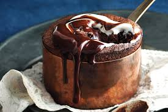

Home
Souffle

Description
Souffles are light and puffy cakes made with egg yolks, beaten egg whites, and a variety of other ingredients.
Ingredients
- 300g dark chocolate, finely chopped
- 1 medium lemon, juiced
- 100g Butter, chopped
- 100g (1/2 cup) caster sugar
- 50g (1/3 cup) plain flour
- 4 eggs
- Pinch of cream of tartar
- 2 tbsp caster sugar
- 8 Lindt Lindor Dark Chocolate Balls
- 60ml (1/4 cup) thickened cream
Steps
- Preheat oven to 180°C. Grease four 310ml (1 1/4-cup) ovenproof dishes with butter.
- Melt chocolate and butter in a large glass or ceramic bowl in microwave on high, stirring every minute until smooth.
Cool for 5 minutes
- Stir the sugar, flour and egg yolks into the chocolate mixture until well combined.
- Use an electric beater to whisk egg whites and cream of tartar in a bowl until soft peaks form.
Add the extra sugar and whisk until firm peaks form. Use a large metal spoon to fold into the chocolate mixture
until combined
- Divide the chocolate mixture among the greased dishes. Press 2 chocolate balls into the centre of the
chocolate mixture in each dish. Bake for 30-35 minutes or until moist crumbs cling to a skewer
inserted into the centre.
- Meanwhile, to make the sauce, heat the chocolate, thickened cream and butter in a heatproof jug in microwave
on high, stirring every minute until melted and smooth.
- Serve with sauce and double cream.